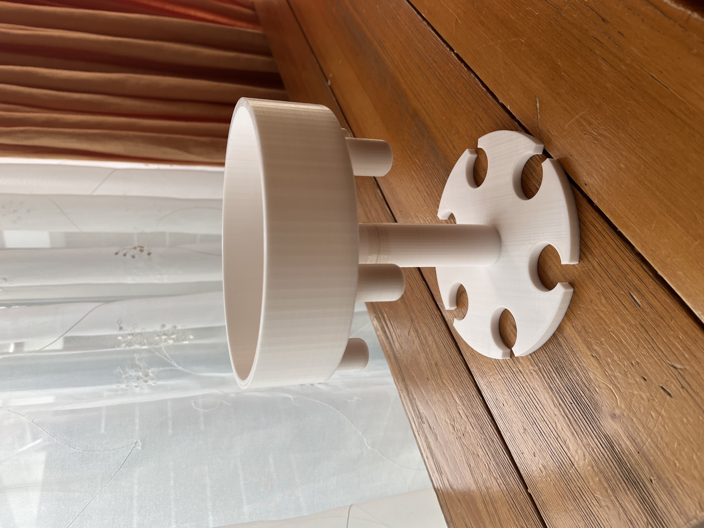
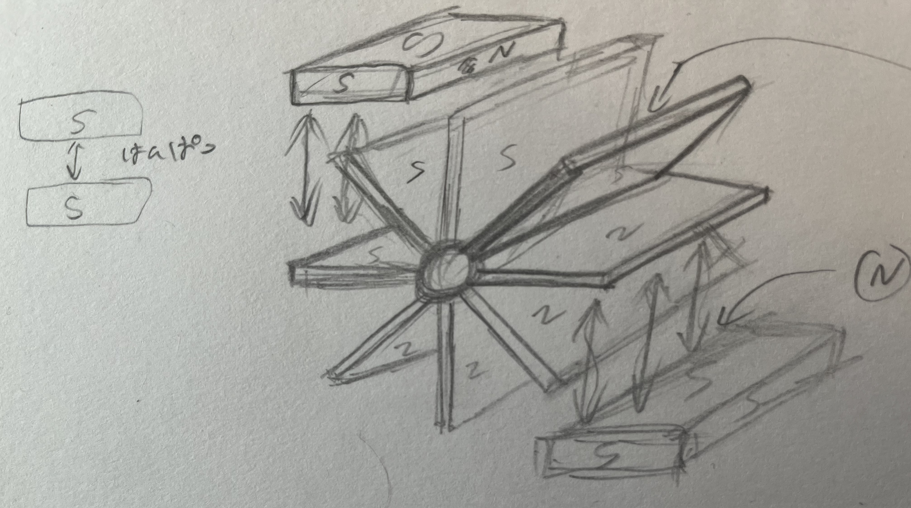
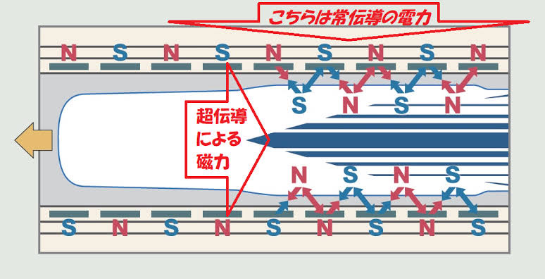

[最終課題 ネタ枠部門]
今回最終課題で作ったのは飲み物を同じ量に履けることが出来るものです。
Twitterに流れてきたこれが欲しくて作りました。
最初に言っておきます。動画の作品は一応失敗作です。
なのでさらにいいものにするために修正している最中です。（ショットグラス作るのも忘れました）
動画っす

（失敗点）
①液体を入れる場所が円の中心じゃないと均等に分けれない
②液体が流れやすい作りにできていない
③ショットグラス家にないのにコップ用じゃなくショットグラス用のを作ってしまった
（感想）
今回作ってみて均等にすることの難しさを実感しました。
改良の余地があるのでさらに手を加えていきたいと思います。
ーーーーーーーーーーーーーーーーーーーーーーーーーーーーーここから先は課題じゃないーーーーーーーーーーーーーーーーーーーーーーーーーーーーーーーーー
[新時代の発電機考えてみた]
現代の世の中ではさまざまな発電方法があり、発電する上で二酸化炭素を出したり限られた資源を利用しなけらばならないなどさまざまな問題点があります。
二酸化炭素を出さない・風力・地熱・水力発電でさえ風の流れを変えてしまったり、限られた場所でしか発電できないなどの問題点があります。
そこで地球にやさしい発電方法は他にないのかと考えたところ私は磁石を使った発電を考えました。
私の考えた発電の仕方はこうです。
＜磁石の反発力を利用＞
火力発電は水を熱エネルギーで水蒸気に変えて、水蒸気がタービンを回転させて発電します。
熱エネルギーを使う工程で化石燃料を使用したり、二酸化炭素が発生するのが問題なのでこのシステムを今回使わずにタービンの方を利用します。

今回私の発電方法ではタービンの羽の部分に磁石を取り付けて（S極）タービンの周りに
（S極）も磁石を置くことによって磁石が反発しあいタービンが回転して発電機で発電ができる！と予想しました。
下のイラストの感じです↓↓

（試作品を作る前に）
試作品を作るにあたって、ただ反発させるだけでは一定のスピードが出るだけでタービンを早く回転させれないで作る電気の大きさを調節できないと
考えたのでもう一つリミアモーターカーの技術を一部利用して回転数を上げたい下げたり出来る（作る電気の大きさを調整する）方法を考えました。
リニアモーターカーではこのようにS極N極を交互に変化させることによって発進、加速、減速などをしています。
＊試作品で回転することに成功したら回転数を調整する仕組みを加えようと思っています。

この技術を参考にしてこのようなモデルを考えました。

（３Dプリンターで試作品作り）
これは最初の反発だけを利用したものです。
それぞれの溝に磁石を差し込み反発し合う向きで差し込み回転させます。
*反発だけを利用するので溝を反発される方向に傾けています。
こっちのは回転数を調整できる仕組みの方です。
引っ張る力と反発する力を均等にするため溝の向きは試作品１号と違い傾けていません。
＊今回は回転数を調整することの前に、お互いのシステムが機能し回転するのかを試す為の試作品なので
溝をそれぞれ動かして回転数の調整をできるようなものにはしていません。
（試作品 果たして動くのか！？）
ここからは有料です
プロジェクト化してさらに発展させていきたいのでメンバー募集